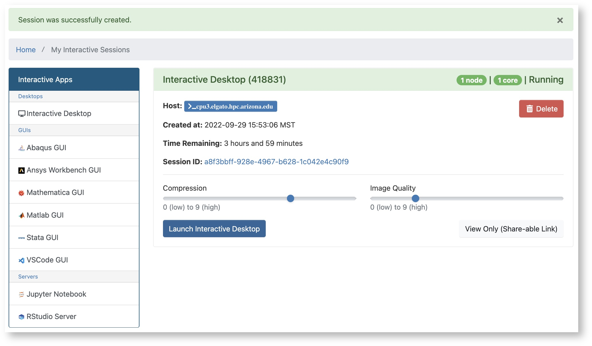
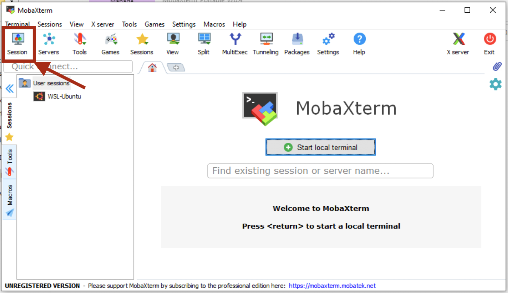
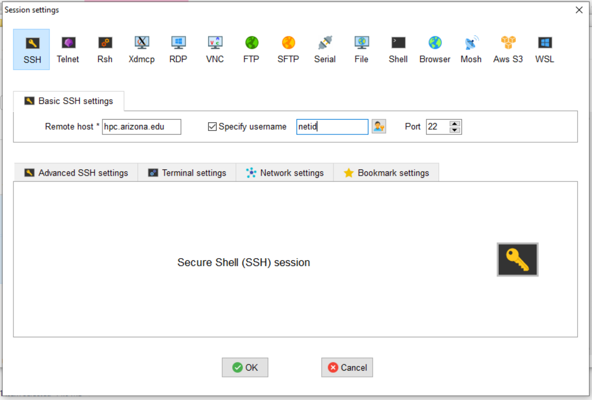

System Access
Overview
Logging into the HPC supercomputers starts with your UArizona NetID and password with two-factor authentication enabled. This section is intended to provide you with instructions on getting terminal access to the system from your specific OS, how to log into the system from our web interface (Open OnDemand), how to set up X11 (image) forwarding, and how to configure your account to allow for a password-less login with SSH keys.
If you experience any problems, refer to our FAQ page which provides some solutions to common problems.
Web Access
Users can gain command line access to HPC through our OOD web interface as an alternative to using a local SSH Client. To use this interface:
- Log into Open OnDemand
- Go to the dropdown menu at the top of the screen and select
Clusters -
Click
>_Shell Access
-
This will put you on the command line on one of the login nodes where you may perform regular housekeeping work, submit jobs, or request an interactive session. By default, you will automatically be connected to Puma. To navigate to a different cluster, use the displayed shortcuts.
Users may also interact with a cluster using a virtual desktop interface. To do this:
-
Log into Open OnDemand and, under My Interactive Sessions, select Interactive Desktop under Desktops on the left-hand side of the page.
-
A form will appear where you will select the target cluster, enter the amount of time you'd like to be allotted (in hours), the number of cores you need, your PI Group (if you are unsure what your group name is, you can check in https://portal.hpc.arizona.edu/portal/), and the queue. Once you've filled in your request, click Launch.

-
A window will appear with the status of your request. It will start in a Pending state and will switch to Running when your desktop session is ready. Click Launch Interactive Desktop to access your session.

-
That's it! You can now use the cluster with a Desktop interface

Command Line Access
Tip
- Credentials: To log into HPC, you will need NetID+ enabled, an HPC account, and internet access. Because we require Duo-authentication to access the system, no VPN is required.
- Password Visibility: When entering your password in the terminal at the prompt, you will not see any characters appear on the screen while typing during this step. This is normal and everything is working as it should.
Tip
Mac systems provide a built-in SSH client, so there is no need to install any additional software. You will find the terminal application under Applications → Utilities → Terminal.
Open the terminal and enter:
ssh netid@hpc.arizona.edu
Windows systems do not have any built-in support for using SSH, so you will have to download a software package to do so. There are several available for Windows workstations. Free SSH clients are available for download from the University of Arizona's Site License website.
PuTTY is the most popular open source SSH Windows client. To use it: download, install, and open the Putty client. Next, open a connection and enter hpc.arizona.edu under Host Name and press Open

This will open a terminal. At the prompt, enter the following, replacing <netid> with your own NetID:
Login as: <netid>
You will then be prompted to Duo-Authenticate. If the process is successful, you will be connected to the bastion host.
MobaXterm is another available SSH Windows client. To connect to HPC, download and install MobaXterm, open the software, select Session → SSH and enter hpc.arizona.edu under Remote host. Next, select the box next to Specify username and enter your UArizona NetID. To connect, click OK at the bottom of the screen:

This will open a terminal and will prompt you for your UArizona password. You will then need to Duo-authenticate. If everything is successful, you will be connected to the bastion host.
Once you reach the bastion host, regardless of method, you should see the following:
Success. Logging you in...
Last login:
This is a bastion host used to access the rest of the RT/HPC environment.
Type "shell" to access the job submission hosts for all environments
shell to connect to the login nodes that will provide access to our three clusters. On the login nodes, you should see:
***
The default cluster for job submission is Puma
***
Shortcut commands change the target cluster
-----------------------------------------
Puma:
$ puma
(puma) $
Ocelote:
$ ocelote
(ocelote) $
ElGato:
$ elgato
(elgato) $
-----------------------------------------
X11 Forwarding
X11 forwarding is a mechanism that allows a user to start up a remote application (e.g. VisIt or Matlab) and forward the application display to their local machine. The key to make forwarding work successfully is to include the -X flag at each login step. To check whether X11 forwarding is active, you may run the command:
echo $DISPLAY
Tips
-
Mac users will want to install the additional software package XQuartz onto their machines to use X11 forwarding with HPC.
-
On a Mac, if you get a blank response to
echo $DISPLAY, you might need this line in your~/.ssh/configfile:ForwardX11Trusted yes -
Be aware forwarding X traffic does not work with the DEPRECATED menu interface enabled. You should disable the menu option and use the hostname shortcuts instead.
Start a terminal session and connect as you typically would with an additional flag -X in your ssh command. Once you're connected to the bastion host, enter the name of the cluster you want to access, including the additional -X flag again. An example of this process is provided below:
$ ssh -X netid@hpc.arizona.edu
Password:
Duo two-factor login for netid
Enter a passcode or select one of the following options:
1. Duo Push to XXX-XXX-8969
2. Phone call to XXX-XXX-8969
3. Phone call to XXX-XXX-0502
4. SMS passcodes to XXX-XXX-8969
Passcode or option (1-4): 1
Success. Logging you in...
Last login:
This is a bastion host used to access the rest of the RT/HPC environment.
Type "shell" to access the job submission hosts for all environments
-----------------------------------------
[netid@gatekeeper ~]$ echo $DISPLAY
localhost:13.0
[netid@gatekeeper ~]$ shell -X
***
The default cluster for job submission is Puma
***
Shortcut commands change the target cluster
-----------------------------------------
Ocelote:
$ ocelote
(ocelote) $
Puma:
$ puma
(puma) $
(puma)[netid@junonia ~]$ echo $DISPLAY
localhost:18.0
To use X11 forwarding on a Windows system, you will need to download an X11 display server such as Xming.
To enable X11 forwarding in PuTTY, go to SSH → X11 and select the box next to Enable X11 forwarding.

Once you've connected to the bastion host, connect to the login nodes with the an additional flag -X:
shell -X
To enable X11 forwarding in MobaXterm, open a new session, select SSH, and open Advanced SSH settings. Select the option below called X11-Forwarding.

Once you've connected to the bastion host, connect to the login nodes with the an additional flag -X:
shell -X
SSH Keys
Why Use SSH Keys?
The Bastion Host uses two-factor authentication and will, by default, prompt you for a password and 2nd factor when you attempt to log in. As an alternative, you can use PKI (Public Key Authentication). This means you will not have to provide a password or Duo-authenticate for any future sessions. To do this, you will need to create an SSH Key on your local workstation and copy the public key to the ~/.ssh/authorized_keys file in your HPC account on the bastion host.
Create and Use SSH Keys
In a Terminal session on your local workstation:
-
Create a public-key pair:
You will be prompted to enter a passphrase. This is optional, but we strongly recommend that you do so.ssh-keygen -t rsa -
After running that command, you will have two new files on your local computer:
~/.ssh/id_rsaand~/.ssh/id_rsa.pubid_rsais your private key file. Do not share this with anybody! It is analagous to your password; anybody who has this file can impersonate you.id_rsa.pubis your public key file. You will upload this onto any servers that you wish to automatically login to. -
Copy the public key to the Bastion Host (you will need to enter your password this one time):
3b. If your computer does not support the ssh-copy-id command, run the following commands:ssh-copy-id netid@hpc.arizona.eduscp ~/.ssh/id_rsa.pub netid@hpc.arizona.edu: ssh netid@hpc.arizona.edu # (you will need to use your password this time) mkdir -p ~/.ssh && cat ~/id_rsa.pub >> .ssh/authorized_keys && rm ~/id_rsa.pub # On the server, copies the key into the appropriate file
Now, logout and attempt to login to the server again. You should not be prompted for a password!
To setup SSH keys on Windows with the PuTTy client, refer to the official PuTTy documentation.
Using SSH Keys for file transfers
Note that SSH Keys can also be used to avoid entering a password and 2nd factor when transferring files to to the cluster via the file transfer node (filexfer.hpc.arizona.edu) using command line programs like scp or sftp. Follow the steps above (2-4 under the Mac and Linux instructions), except use filexfer.hpc.arizona.edu instead of hpc.arizona.edu. Note that you only need to generate the keys in Step 1 once. The same ~/.ssh/id_rsa.pub file may be used to identify yourself to multiple hosts.
If you would like to learn more about SSH keys and more, please refer to this in-depth guide created by our friends at Digital Ocean.